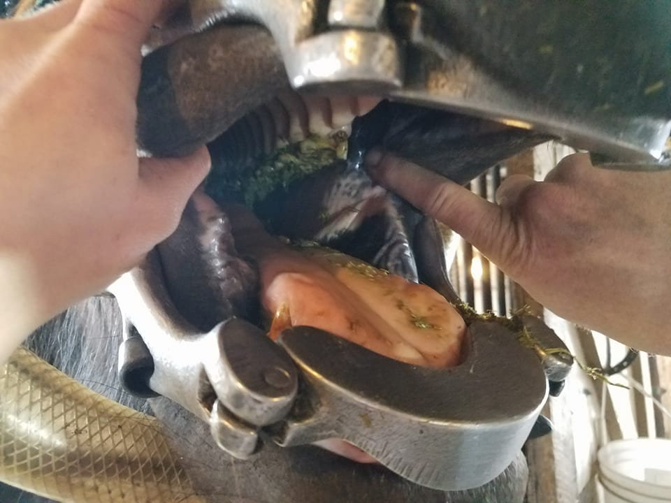

Equine dentistry is an important aspect of overall horse health for all ages. Horses develop sharp enamel points throughout their lives which can become damaged and crack. Cracked teeth are painful and can become infected which can lead to a sinusitis (infection inside the sinus cavities) which manifest as extremely malodorous nasal discharge. Horses can also development periodontal disease like people which affects the gums and eventually tooth roots. These abnormalities result in oral pain and if can develop into undesirable behaviors if left unaddressed. Full, standing sedation with a full mouth speculum is the best means to achieve comprehensive examination of the equine mouth and to perform any necessary dental work. The frequency and need for a full oral examination will depend on the age of the horse and individual needs. Yearly, brief oral examination (one without sedation) starting at birth is recommended to determine the best course of dental care needed for your horse.
Sharp Enamel Points:
The width of the upper and lower jaw differs; the upper jaw (maxilla) is slightly wider than the lower jaw (mandible). When the horse chews, the maxilla and mandible slide over each other in a side-to-side manner. As a result, the teeth wear down gradually and sharp points develop on the inside of the mandibular cheek teeth and the outside of the maxillary cheek teeth. When the points become long and sharp, they will cause lacerations and ulceration on the cheeks and tongue. This is very painful to the horse and may result in undesirable behavior while bridling, handling or riding. Those points should be filed down (floated) regularly to avoid unnecessary discomfort.
Floating teeth:
The term “floating” originated in masonry and carpentry to describe leveling or smoothing plaster. The process of “floating” horses teeth involves filing or rasping down the sharp enamel points to normal grazing levels. Floating teeth was first down with hand files that only cut in one direction (push or pull). For over 10 years, the equine industry has adopted and accepted the use of dental power tools. Power tools operate with rotary or reciprocating bits. These tools file the teeth continuously, evenly and at a much faster and more accurate manner. The addition of power tools has enabled equine dentists to be more thorough and efficient. A concern when utilizing power tools is causing thermal heat and damage to teeth. If used properly, power equipment does not create pathologic thermal effects, even without the use of irrigation (1). All accredited veterinarian are required to have proper training and accredited veterinary colleges implement the use of dental power equipment into their programs.
Wolf Teeth and Canine Teeth:
Canine teeth have no deciduous precursor and start erupting at approximately 4 to 5 years of age and are more commonly present in male horses. The canine teeth typically do not cause problems and require minimal care. Gentle filing of the teeth may be necessary to soften the points, but aggressive filing should be avoided since this tooth contains a sensitive pulp cavity. Unlike the other teeth, canine teeth do not continuously erupt and they should not wear on any other teeth.
Wolf teeth also do not have a deciduous precursor and may be present in none, all or only some of the dental arcades. The wolf tooth is technically the first premolar (premolar 1) and erupts during the first year of life. Wolf teeth are usually no more than 1 to 2 cm long and can have a single root extending 30mm. Not all retained wolf teeth are problematic, but exaction is common, especially during gelding procedures. In some cases, the wolf teeth are shed during eruption of the permanent premolars. Some wolf teeth do not fully erupt and are still hidden under the gingival mucosa. Those “blind” teeth may cause irritation to the mucosa and pain, extraction would be beneficial in those cases.
